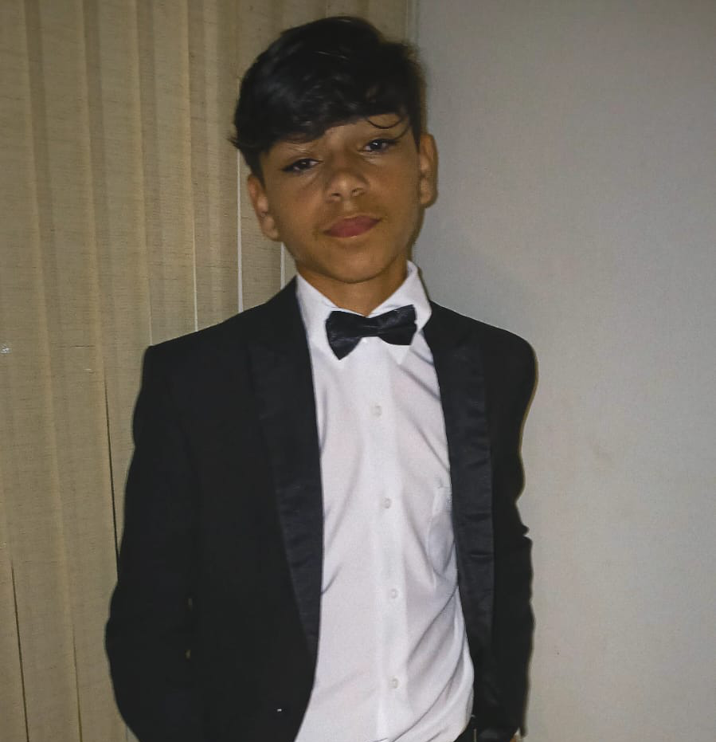

INTRODUCTION
Software Engineer who loves talk about tech, games and biotech
My name is Bernardo Fernandez, I'm a software engineer and i have 15 years old. I'm from Salvador, Bahia, Brazil. I'm on High School and also do a technician in Biotechnology on Senai Cimatec. I'm a passionate about technology and i love the idea of fix problems and create solutions using code.
Additionally, I'm currently working as a IT Assistant on Amara Net Zero. There, i improve my skills and learn more about the technology and software development.
⚡️ Fun fact: I don't like coffee and i love watch animes.

Music
Lofi
City
Salvador, Bahia
Stacks
The Lion King
System
Windows
Career
IT Assistant
Amara Net Zero · Remote
December 2023 - Present